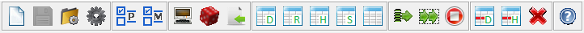

volver
Barra de herramientas

- Nueva clase
- Guardar clase
- Cargar y compilar clase
- Compilar clase
- Seleccionar problema
- Seleccionar métodos
- Introducir datos por teclado
- Generar datos aleatorios
- Cargar datos de fichero
- Exportar tabla datos
- Exportar tabla resultado
- Exportar tabla de histórico
- Exportar tabla resumida
- Exportar todas las tablas
- Ejecutar grupo de métodos
- Ejecución intensiva
- Parar ejecución
- Borrar fila en tabla datos
- Borrar fila en tabla histórica
- Borrar datos de sesión
- Ayuda sobre OptimEx
Nota:
Para mas información consulte la sección Referencias de los menús.
16 de Septiembre de 2016